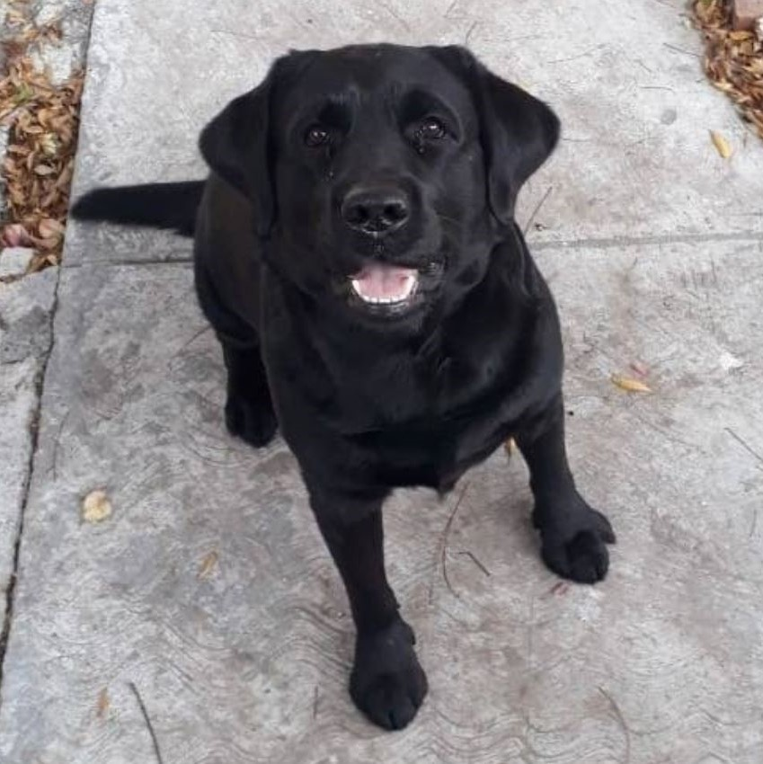

About me
Pursuing a career in robotics has been my dream since I can remember and so far, from disarming my toys and assembling them back again when I was a puppy, to creating automated rescue robots for a simulation of a disaster zone more recently in college, and being a mentor of such robotics teams, I’ve witnessed my growth and I’m proud of where I’m standing and where I’m heading; especially due to the fact that my passion for the field has only increased.
It's been a difficult road, specially when one takes into account the fact that I'm a Labrador. Nonetheless, thanks to the support that my family has given me since my adoption, I've been able to flourish in this field. I'm extremely grateful for the opportunities that have been given to me, and looking into the future makes my tail wag.
I believe I'm able to have such a demanding work and study routine, because I enjoy every moment in life, which lets me rest properly when I'm not working or studying and doing other equally important stuff as sniffing and barking at people who get too near my house. I need to protect my family. And, definitely one of the biggest pleasures in life is to get a good bellyrub.